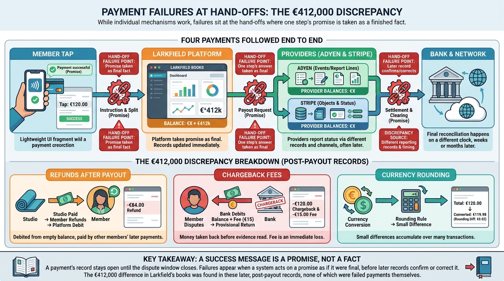

Part IX — JOURNEYS: One Payment, End to End
Part IX — JOURNEYS: One Payment, End to End
AI-assisted: researched and written with Claude Code; illustrations generated with Gemini. How this works

Image generated by Google Gemini (gemini-3-pro-image-preview)